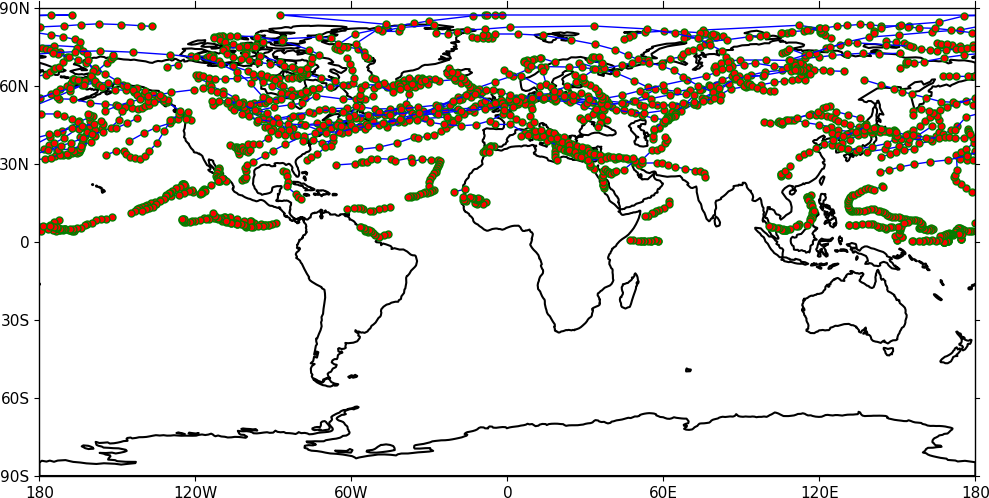
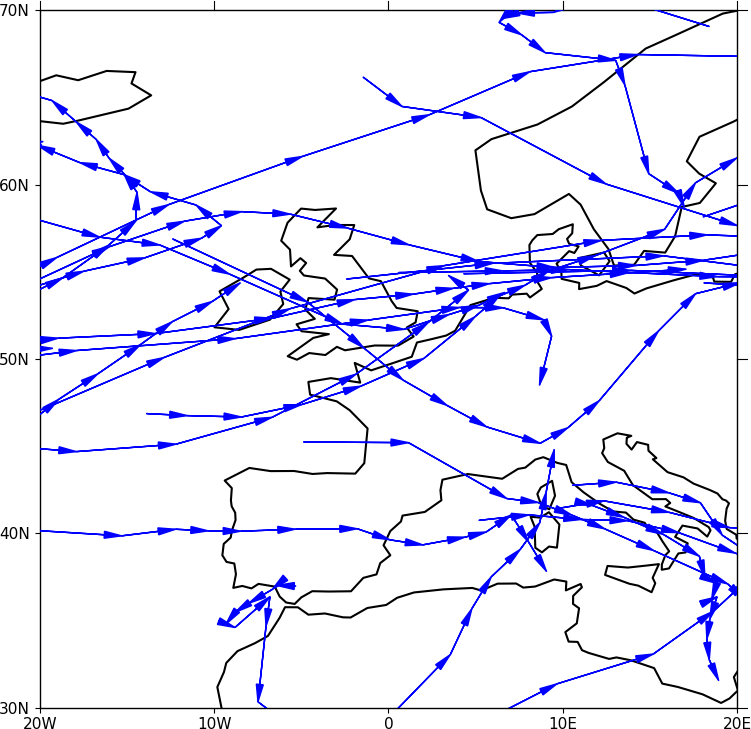
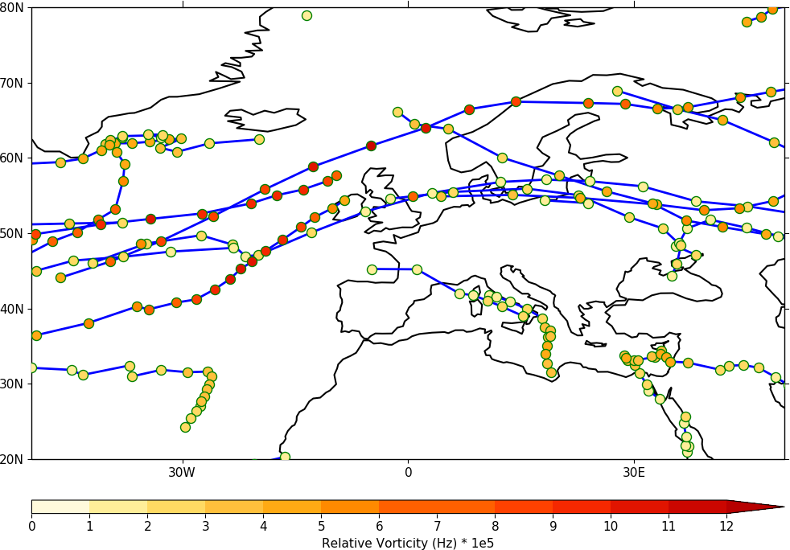

Trajectories¶
Data stored in contiguous ragged array format, such as from Kevin Hodges’s TRACK program, can be plotted using cf-plot.
Example 39 - basic track plotting¶
{kind=link}
import cf
import cfplot as cfp
f=cf.read('cfplot_data/ff_trs_pos.nc')[1]
cfp.traj(f)
Here a plot of relative vorticity tracks is made in the cylindrical projection.
Example 40 - tracks in the polar stereographic projection¶

import cf
import cfplot as cfp
f=cf.read('cfplot_data/ff_trs_pos.nc')[1]
cfp.mapset(proj='npstere')
cfp.traj(f)
Example 41 - feature propagation over Europe¶
{kind=link}
import cf
import cfplot as cfp
f=cf.read('cfplot_data/ff_trs_pos.nc')[1]
cfp.mapset(lonmin=-20, lonmax=20, latmin=30, latmax=70)
cfp.traj(f, vector=True, markersize=0.0, fc='b', ec='b')
Data with lots of tracks takes several seconds to plot as the direction vectors have to be plotted individually whether they are on the plot or not.
Example 42 - intensity legend¶
{kind=link}
import cf
import cfplot as cfp
f=cf.read('cfplot_data/ff_trs_pos.nc')[1]
cfp.mapset(lonmin=-50, lonmax=50, latmin=20, latmax=80)
g=f.subspace(time=cf.wi(cf.dt('1979-12-01'), cf.dt('1979-12-30')))
g=g*1e5
cfp.levs(0, 12, 1, extend='max')
cfp.cscale('scale1', below=0, above=13)
cfp.traj(g, legend=True, linewidth=2, colorbar_title='Relative Vorticity (Hz) * 1e5')
In this plot the tracks between 1979-12-01 and 1979-12-30 are selected and labelled according intensity with a colourbar.